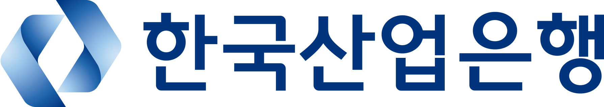

Korea Development Bank2026.06 — 2026.08
한국산업은행
AI디지털전략부 인턴
AI개발팀 | AI데이터팀
현업 검증을 거친 업무별 AI Assistant 개발
공문 초안, 산업분석 요약, 여신승인신청서 종합의견, 문체 변환을 위한 시스템 프롬프트를 설계했습니다. 여신 업무의 RM과 CO 역할을 구분하고, 지점 실무자 피드백으로 고도화한 종합의견 생성 기능은 사내 LLM 서비스에 배포되었습니다.
LLM 사용 목적별 모니터링 대시보드 개선
서버 단위로 집계되던 vLLM 지표를 사용 목적별로 재구성했습니다. 토큰 및 요청 처리량과 응답 지연(TTFT, TPOT, E2E)의 p95를 함께 살펴볼 수 있도록 Grafana 대시보드를 개선했습니다.
은행 규정 LLM Wiki PoC 검증
규정을 구조화된 지식으로 전환하는 과정에서 모델별 산출물, 문서 개정 처리, 엔티티 구성 방식을 비교했습니다. 원본 충실성과 출처 추적, 반복 실행의 일관성을 검증 기준으로 삼았습니다.
어떤 문제를 발견하고, 어떻게 접근했나요?
문서 분석에서 역할별 업무 설계로
참고 문서에서 여신승인신청서의 종합의견 생성 과제를 발굴하고, 여신 교재 6권과 작성 가이드라인을 학습했습니다. RM과 CO의 관점 차이를 반영해 역할별 Assistant를 설계했으며, 원문 보존, 범위 제한, 적합한 Assistant 안내를 프롬프트에 반영했습니다.
완성도를 높인 것은 현업 피드백
테스트케이스로 프롬프트를 조정한 뒤 지점 실무자의 검토를 받았습니다. 문서상 작성 방식과 현장 관행의 차이를 확인하고, 서술 형식과 재무제표 기준에 대한 의견을 반영해 최종본을 개선했습니다.
운영 지표를 읽는 기준
Counter와 Gauge의 특성에 맞춰 집계를 구분하고, 평균에 가려지는 느린 요청을 보기 위해 지연의 p95를 시각화했습니다. 트래픽 증가와 사용자 체감 성능을 함께 확인하는 운영 관점을 정리했습니다.
모델 성능과 지식 구조를 함께 검증
동일한 샘플을 사용해 모델별 필수 섹션 누락, 깨진 링크, 원본에 없는 내용 생성을 비교했습니다. 개정 실험에서는 규칙 ID 재사용과 삭제된 예외의 이력 추적 문제를 확인했습니다.
단일 실험의 결론을 확장 실험으로 확인
직급 중심과 업무 중심의 엔티티 구성을 5개 업무 영역에 걸쳐 비교했습니다. 업무 중심 구조의 장점은 세분화 기준이 명확할 때 유지된다는 조건을 도출하고, 형식 검증과 의미 검증을 분리하는 방안을 제안했습니다.
LLM Wiki 내용은 인턴 개인 PoC의 실험, 비교 결과입니다. 운영 반영 여부와 정량적 성능 개선 수치는 별도로 주장하지 않습니다.